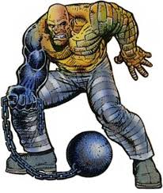

| #6500-87: CREEL,CARL. | ALIASES; ABSORBING MAN, CRUSHER CREEL, ROCKY DAVIS | THREAT LEVEL: 7.6 |
| SPECIES: AUGMENTED HUMAN HEIGHT: 6' 10" WEIGHT: 437 LBS D.O.B: 3/14/65 HAIR COLOR: NONE GENDER: M CONTAINMENT LOCATION: THE RAFT CONTAINMENT STATUS: ON PROBATION BLOOD TYPE: B+ |
 | |
| POWERS/ ABILITIES TAKING ON THE PHYSICAL PORPURITES OF ANYTHING HE TOUCHES SUPERHUMAN STRENGTH SUPERHUMAN STAMINA SUPERHUMAN DURIBILITY |
BIO; CARL CREEL WAS AN AMATEUR BOXER AND PETTY CROOK. HIS VICIOUS NATURE IN THE RING EVENTUALLY CAUGHT THE EYE OF NOTABLE CRIME FIGURE LEELAND OWLSLEY.[DELTA 1 ACCESS REQUIRED TO ACCESS OWLSELY,LEELAND FILES.] SOON CREEL WAS NOTICED BY THE NORE GOD, LOKI. [ALPHA 1 ACCESS REQUIRED TO ACCESS LAUFEYSON,LOKI FILES.] LOKI PROVIDED CREEL WITH A POTION WHICH GRANTED HIM THE ABILITY TO TAKE ON THE PHYSICAL PROPERTIES OF ANYTHING HE TOUCHED. CREEL ALSO SHOWS SIGNS OF GAMMA MUTATION AFTER A ALTERCATION IN NEW MEXICO WITH THE "DEVIL" HULK [OMEGA 1 ACCESS REQUIRED TO ACCESS DEVIL HULK FILES] WHERE CREEL ABSORBED ENOUGH GAMMA ENERGY TO POWER MANHATTAN FOR 78 YEARS AND 4 MONTHS.
CONTAINMENT REQUIREMENTS: WHEN TAKEN INTO CUSTODY CREEL WILL BE PLACED IN A CELL WITH A 3 INCH THING FORCEFEILD WITH THE SAME PROPERTIES AS HELIUM LINING ALL OF THE WALLS. IF CREEL ATTEMPTS TO ESCAPE USING HIS POWERS, HIS BODY WILL DISPURSE INTO THE ATMOSPHERE. [BETA 3 ACCESS NEEDED TO ACCESS FULL SOLID AIR FORCEFEILD SCHEMATICS.] |
prev next |